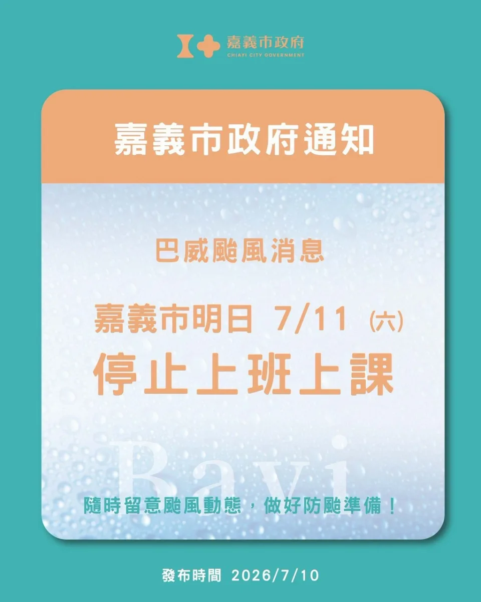

嘉義市政府已發布巴威颱風消息，7 月 11 日（六）嘉義市停止上班、停止上課。配合市府公告與團員安全考量，原訂 7 月 11 日的《為伍》團練維持取消，請大家今晚與明日都以安全、防颱與家中整備為優先。

目前颱風與各地影響
依行政院人事行政總處 7 月 10 日晚間更新的天然災害停止上班及上課情形，嘉義市 7 月 11 日已達停止上班及上課標準；同頁也列出北部、竹苗、中南部與東部多個縣市 7 月 11 日達停班停課標準，部分山區、離島與縣市已於 7 月 10 日下午或晚間提前停止上班上課。
國際通訊社報導指出，巴威颱風預計於週五晚間至週六影響臺灣周邊，北臺灣沿海已出現長浪，漁船進港避風，部分往日本、香港等航班也已取消或調整。颱風後續仍將往中國東南沿海接近，浙江、福建等地已進行預防性撤離、漁船回港與渡輪停航等防災措施。
截至發文時，臺灣各地主要訊息仍以停班停課、交通調整與防颱整備為主。由於災情會隨風雨變化快速更新，請大家以中央氣象署、嘉義市政府、人事行政總處與各地政府最新公告為準，不轉傳未確認的災情或截圖。
給團員與家長的提醒
- 7 月 11 日（六）團練取消，請不要前往學校或團練地點。
- 7 月 12 日（日）團練是否照常，將依後續颱風動向、嘉義市天候與學校安全狀況再行通知。
- 請確認家中門窗、陽台物品與樂器收納位置，避免強風或滲水造成危險與損壞。
- 非必要請減少外出，特別避免前往海邊、溪流、山區道路、地下道與容易積淹水的地方。
這幾週大家都在為 8 月 8 日《為伍》努力排練，但天候風險高時，安全一定放在團練之前。請各聲部協助轉知團員，也請大家留意後續公告，等天氣穩定後再回到團練室繼續準備。
資料參考：行政院人事行政總處天然災害停止上班及上課情形、中央氣象署颱風消息、AP News 巴威颱風報導。停班停課與災情資訊仍會更新，請以各主管機關最新公告為準。